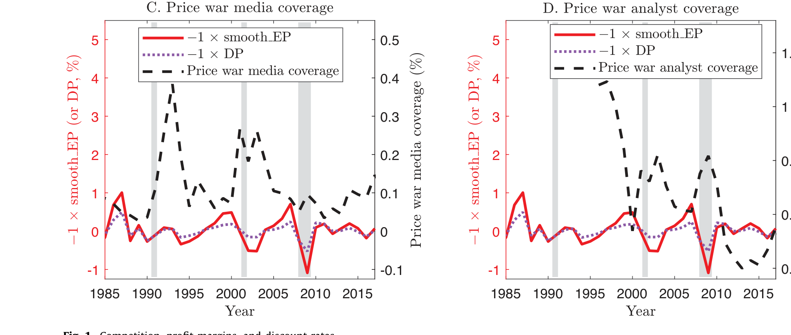
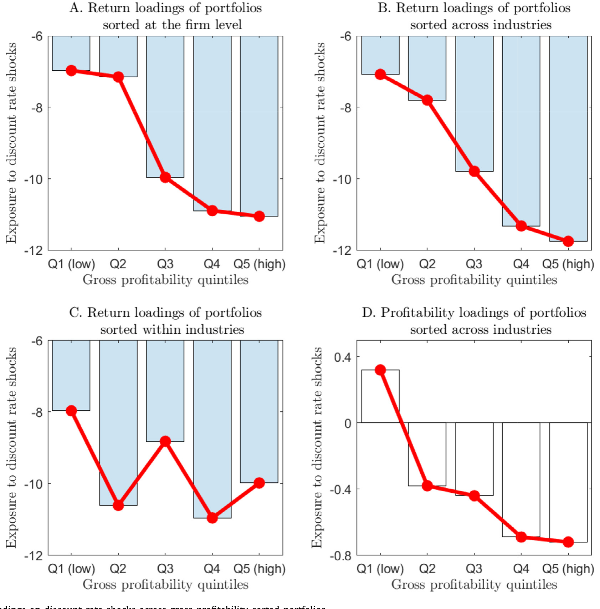
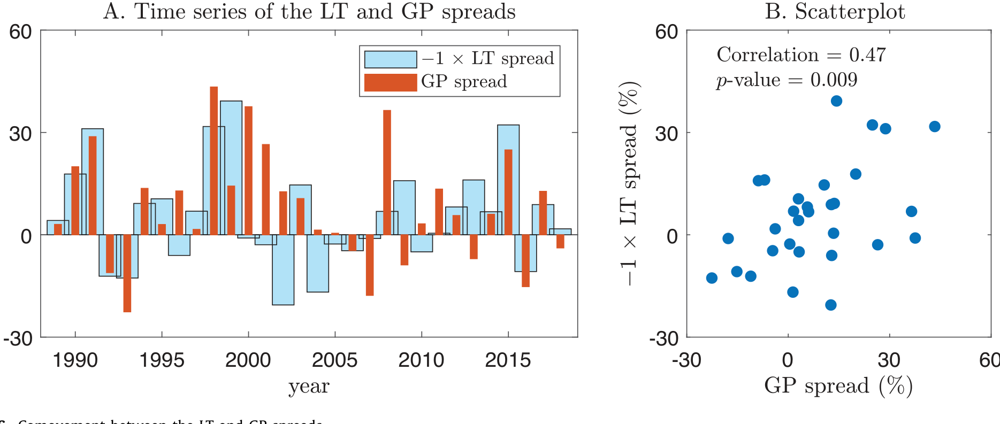
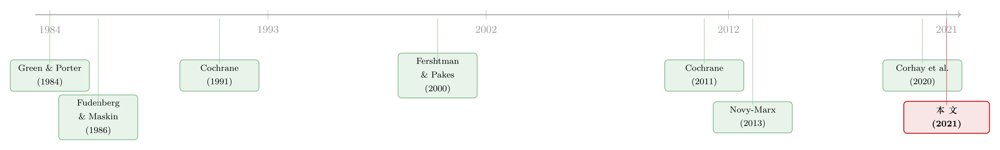

高贴现率，为什么会逼着对手「打价格战」？
本文读的是 Dou, Ji & Wu (2021, Journal of Financial Economics)：他们把产业组织里的「重复博弈—默契合谋」装进了一个有时变贴现率的资产定价模型，得到一个看似反直觉、却又极其干净的结论——当贴现率（risk premia）升高时，企业之间的合谋更难维持，竞争会内生地加剧，利润率被压窄；而在「市场领导地位更稳固」的行业里，利润率更高、却也对贴现率冲击更敏感，于是跨行业的毛利率溢价（gross profitability premium）就被自然地讲了出来。他们还用大幅关税下调作为市场结构的外生冲击，直接检验了这条机制。
1 两拨人，研究的其实是同一件事
先讲一个长期被「分居」的事实。
产业组织（industrial organization, IO）的学者花了几十年研究一件事：市场为什么如此集中、龙头为什么如此持久、企业之间的竞争强度为什么会随时间剧烈起伏。按美国人口普查数据，每个四位 SIC 行业里，前四大和前八大企业分别占了该行业总收入的 48% 和 60% 以上——这是一个高度寡头的世界，而寡头之间的「斗与不斗」，正是 IO 研究的核心。
资产定价的学者也花了几十年研究另一件事：贴现率（discount rates，或者说风险溢价）在时间序列上剧烈波动，而且这种波动几乎主导了股价的变化（Rozeff, 1984；Fama and French, 1988；Campbell and Shiller, 1988；Cochrane, 2011）。关于这一点，可参见《贴现率：资产定价的中心议题》——Cochrane 那篇著名的主席演讲，正是把「贴现率才是故事主角」这件事钉在了学界的桌面上。
奇怪的是，这两拨人几乎从不照面。IO 的合谋模型里，贴现因子往往被当成一个无聊的常数；资产定价的模型里，企业要么是完全竞争的价格接受者，要么是一只机械产出现金流的「树」。
那么，一个自然的问题是：如果贴现率本身在剧烈波动，IO 那套「合谋还是竞争」的逻辑会发生什么？ 这就是本文的切入口。
2 一个反周期的事实，和一个顺周期的事实
作者先摆出两个「动机性事实」（motivating facts），都很扎眼。
第一个是时间序列上的：跨行业平均利润率——它反映了产品市场里平均的竞争强度——和贴现率负向共动。也就是说，坏时候（贴现率高）利润率反而被压低了。与此同时，作为竞争激化最显眼的形式，「价格战」在媒体和分析师报告里的曝光度强烈地反周期，在贴现率高的时候铺天盖地。

Figure 1: Competition, profit margins, and discount rates
第二个是横截面上的：毛利率越高的公司，其股票收益对贴现率冲击的暴露越负（如图 2 的 panel A）。这本身就有意思——因为贴现率冲击带着一个负的风险价格，所以「对贴现率更敏感」就意味着「该要更高的预期收益」，这恰好为毛利率溢价提供了一个风险解释的可能。但作者很诚实：panel B、C 告诉我们，这个规律在跨行业层面成立、在行业内部却并不稳健。

Figure 2: Loadings on discount-rate shocks across gross-profitability-sorted portfolios
于是张力就出来了：贴现率似乎能解释跨行业的毛利率溢价，却管不了行业内的那一部分（行业内那块，Kogan and Papanikolaou (2013) 的「位移风险」更管用）。要把这件事讲圆，光有相关性是不够的——必须有一个能同时生出这两条曲线的机制。
3 核心直觉：合谋，是一笔「跨期买卖」
机制的种子，藏在 IO 最经典的那个范式里：重复博弈与无名氏定理（folk theorem, Fudenberg and Maskin, 1986）。
设想一个差异化产品的动态 Bertrand 寡头行业。龙头们本可以「默契合谋」（tacit collusion）——大家心照不宣地把利润率维持在高位，谁也不打价格战，于是人人都赚得盆满钵满。但合谋从来不是免费的午餐：任何一家公司，只要偷偷把价格压低、抢走对手的客户，就能在当期狠赚一笔。它之所以不这么做，是因为背叛会被发现，而对手的报复——回到惨烈竞争——会让它在未来蒙受损失。
所以，合谋能否维持，取决于一道权衡：
$$\text{当期背叛的收益} \quad \le \quad \text{未来被报复的损失（贴现到今天）}$$
但「贴现到今天」这四个字，正是贴现率藏身的地方。这里就是全文真正关键的一步：未来报复的威慑力，是要用贴现率折算的。贴现率越高，未来那顿「胖揍」在今天看来就越不值钱，威慑就越弱。
于是反转出现了——贴现率一升高，合谋就更难维持，企业为了眼前的现金流互相杀价，竞争内生地加剧，利润率被压窄。这不是哪个外生参数在变，而是企业在「短期现金流 vs 长期合作价值」之间重新权衡的均衡结果。坏时候贴现率高，所以坏时候竞争烈、利润薄、价格战多——第 2 节那两个事实，瞬间就解释通了。
4 模型设定与那一个核心方程
模型把上面的直觉装进了一个有时变风险价格的行业均衡框架。为简化，行业里有两个龙头 \(i\in\{1,2\}\)，即一个双寡头（\(n=2\)）。消费者从一篮子差异化产品中获得效用，行业消费指数 \(C_t\) 由一个 Dixit-Stiglitz 不变替代弹性（constant elasticity of substitution, CES）聚合给出：
其中 \(\eta>1\) 是产品之间的替代弹性：\(\eta\) 越大，产品越同质、越好替代，需求的价格弹性越高，市场结构就越「竞争」。这个 \(\eta\) 后面会成为识别的抓手——因为它正是「市场有多容易打价格战」的旋钮。
由于篇幅与排版，本文不在此逐行复刻合谋激励相容约束的完整代数（论文 Section 3 有完整推导）。但核心只有一句话：可持续的默契利润率，由「背叛激励」反向决定——更高的合谋利润率，只能靠更低的背叛激励来支撑；而背叛激励又被「短期 vs 长期现金流」的权衡所塑造。贴现率一升，长期那一侧贬值，约束就收紧，利润率被迫下调。
模型还给出了唯一的事前行业异质性：市场领导地位的更替率（turnover rate of market leaders）。某些行业里，今天的龙头很容易被昔日的追随者掀翻；另一些行业里，龙头的位置极其稳固。这个差异，会成为下一节那条「过度识别」的来源。
5 一条机制，照出两个横截面
这是全文我最欣赏的设计。模型推出了一个「过度识别」（overidentification）的结构：同一个贴现率冲击的暴露，会同时映射到两个不同的横截面上。
- 其一：毛利率越高的行业，暴露越大、预期收益越高；
- 其二：领导地位越持久（更替率越低）的行业，暴露越大、预期收益越高。
为什么这两条会并存？因为在领导更替率低的行业里，龙头的位置稳固，「未来报复」的威胁实打实地悬在头顶，于是大家更容易合谋、利润率更高；而正因为这份高利润率是靠合谋撑起来的，它对贴现率的波动也就更敏感——贴现率一动，合谋的天平就跟着晃。反过来，更替率高的行业，龙头朝不保夕，报复不可信，合谋难成，利润率本就低、对贴现率也就麻木。
这就一举把第 2 节那个「跨行业能解释、行业内解释不了」的谜题收口了：毛利率溢价的跨行业部分，本质上是「领导持久性」在通过内生竞争渠道定价。
而「过度识别」最漂亮的地方在于检验力：你可以拿一个横截面（领导更替率）排出的多空收益，去解释另一个横截面（毛利率）的收益可预测性。作者正是这么做的——在控制了领导更替度量之后，跨行业毛利率溢价大幅下降、并变得在统计上不显著。两条曲线，确实是同一根机制的两个投影。

Figure 6: Comovement between the LT and GP spreads
6 识别策略：用关税下调撬动市场结构
光有相关性还不够。模型有一个最尖锐、也最可证伪的预言（见论文 Section 3.8）：当市场结构变得更竞争时，「高/低毛利率行业之间、对贴现率冲击敏感度的差距」会被抹平。直觉是：市场越竞争（\(\eta\) 越高、或龙头数 \(n\) 越多），合谋本就难成，那么贴现率再怎么动，也没多少「合谋」可供它去动摇了。
怎么找到「市场结构变更竞争」的外生变化？作者用了两套设定。
第一套，沿用贸易金融文献的经典做法（Frésard, 2010；Valta, 2012；Frésard and Valta, 2016），用意外的大幅进口关税下调作为冲击。关税一降，外国产品涌入，行业的需求价格弹性 \(\eta\) 和有效的「龙头数」\(n\) 都上升，市场结构被外生地推向更竞争的一端。
第二套，用 Hoberg and Phillips（2010a, 2016）的跨行业产品相似度：当一个行业的产品变得和其他行业越来越像，它面对的需求弹性就更高，市场也更竞争。
两套设定，结论一致：在大幅关税下调（或产品相似度大幅上升）之后，高/低毛利率行业之间、以及高/低领导持久性行业之间，那道「对贴现率敏感度的差距」明显收窄了。机制被直接验证。这种「用产品相似度刻画竞争」的思路，和《并购是为了把饼做大，还是把价抬高？》里 Hoberg–Phillips 的工具是同一脉。
7 数据与度量
几个关键的「翻译」值得记下来：
- 贴现率代理：用 Campbell and Shiller（1988, 1998）提出的平滑盈利—价格比（smoothed earnings-price ratio）这类现成代理。
- 领导更替度量（leadership turnover measure）：用专利数据构造「创新相似度」——在 Jaffe（1986）、Bloom et al.（2013）的意义上，行业间创新越相似，越不容易出现颠覆性创新，龙头更替的可能性就越低。再用 logistic 回归把它和其他行业特征拼成一个对更替率的估计。
- 竞争强度：用利润率（profit margins）反向刻画。
- 观测单位主要在行业层面（这正是「跨行业」溢价的舞台），价格战曝光度则由对媒体与分析师报告的文本分析构造。
8 文献脉络
这条研究的来路，其实是两条大河的交汇。
一条来自 IO 的重复博弈传统：Green and Porter（1984）把「不完全监测下的合谋与价格战」写成了均衡，Fudenberg and Maskin（1986）的无名氏定理奠定了合谋可持续性的理论基石，Fershtman and Pakes（2000）则把合谋与价格战放进了动态寡头。但在这条河里，贴现率一直只是个安静的常数。
另一条来自资产定价的贴现率传统：Cochrane（1991）从生产端把股票收益和经济波动连了起来，到 Cochrane（2011）那篇主席演讲，「贴现率才是主角」已成共识；与此同时，Fama and French（2006）发现盈利能力能预测收益，Novy-Marx（2013）把它精炼成了毛利率溢价——但理论解释一直稀缺。

两条河的合流处，近年才热闹起来：Opp et al.（2014）已经指出竞争会随贴现率上升而内生加剧；Corhay, Kung and Schmid（2020）则建了一个一般均衡的生产型模型，研究加成率（markups）与股票收益的内生关系——不过他们聚焦的是一次性的非合谋纳什均衡。本文站在这两者之间，独到之处在于：它考虑的是合谋纳什均衡，强调的是领导更替率这一行业异质性，因而能生出别人生不出的那一块——跨行业的毛利率溢价。
9 评论与延伸（Q&A + 研究方向）
(a) 几个可能的疑问
Q：这和 Opp et al. (2014)、Corhay et al. (2020) 到底差在哪？
差在「合谋」和「异质性」。Opp et al. 与 Corhay et al. 主要刻画一次性的非合谋（Nash）竞争；本文引入重复博弈下的默契合谋，并把领导更替率作为唯一的事前行业异质性。正是这个异质性，让模型能同时生成利润率的水平差异和波动差异，并解释跨行业毛利率溢价——这是前两者做不到的。
Q：「高贴现率 → 竞争加剧」会不会因果讲反了？是不是竞争加剧本身推高了风险溢价？
这正是识别的难点。本文的应对是用关税下调和产品相似度上升作为市场结构的外生冲击：这些冲击改变的是 \(\eta\) 和 \(n\)（市场有多竞争），而非贴现率本身。看到「敏感度差距在冲击后收窄」，方向就被钉住了——是更竞争的结构削弱了贴现率的作用，而不是反过来。
Q：为什么这条机制只对「跨行业」毛利率溢价管用，行业内就不灵？
因为机制的开关是行业层面的合谋与领导持久性，它在行业之间制造差异，却不在同一行业内部区分公司。行业内的毛利率溢价，作者明确让位给 Kogan and Papanikolaou（2013）的位移风险渠道——两条渠道是互补，而非竞争。
Q：用「专利创新相似度」去代理「领导更替率」，会不会代理得太远？
这是最值得追问的一处。逻辑链是「创新越相似 → 颠覆性创新越少 → 龙头越难被掀翻 → 更替率越低」。链条不短，每一环都可能漏。作者用 logistic 回归把它和其他行业特征一起拟合更替率，算是缓解，但这个度量的构造性误差，确实是结果稳健性的一个潜在软肋。
Q：把行业简化成「两个龙头」，结论还成立吗？
作者在附录把模型扩展到了引入合谋成本、且龙头数多于两个（\(n>2\)）的情形。结论是：龙头越多越难合谋、合谋利润率越低；而双寡头与多寡头的资产定价含义在量上相近——因为多寡头里合谋→非合谋的内生跳变发生得更频繁，恰好补偿了「合谋利润率响应更弱」这件事。
Q：「竞争风险溢价」是个新东西，还是旧酒新瓶？
是作者明确命名的一个新成分：风险溢价中因竞争强度变化而额外产生的那一部分。坏时候竞争内生加剧、利润率被压窄，放大了总量冲击、抬高了市场风险溢价——这块溢价在传统模型里是缺席的。
(b) 几个可能的研究问题与提案
1. 把这套机制搬到公司债 / 信用利差上。
【经济故事】合谋撑起的高利润率，在坏时候会内生地崩塌——这等于在贴现率高时给现金流加了一层「向下的杠杆」。对债权人而言，这意味着违约风险恰恰在最坏的时候被放大，信用利差应当对「领导持久性」有额外暴露。【可行性】中。所需数据齐备（TRACE 债券交易、Compustat 基本面、本文的领导更替度量），识别可沿用关税冲击；难点在于把股票端的机制干净地映射到信用利差的期限结构上。
2. 外资进入作为「市场结构」的外生冲击。
【经济故事】关税下调之外，外国机构投资者或外国竞争者的进入，同样会改变行业的有效竞争强度与龙头格局。若外资进入削弱了本土龙头的合谋能力，本文预言「敏感度差距」会收窄——这给了一个全新的识别变量。【可行性】中。可结合外资持股数据与本文框架；难点是分离「外资作为竞争者」与「外资作为投资者」两种渠道。
3. 流动性视角：合谋崩塌时，二级市场流动性会同步恶化吗？
【经济故事】价格战爆发往往伴随基本面不确定性骤升，这通常会传导到该行业证券的流动性上。若「领导更替率低」的行业在坏时候经历更剧烈的合谋崩塌，其股票/债券的流动性折价是否也更顺周期？【可行性】中高。流动性度量成熟，可与本文的行业分组直接对接。
4. 直接度量合谋，而非用利润率反推。
【经济故事】本文以利润率作为竞争强度的代理。若能用反垄断案件、私人卡特尔数据（如 Connor 2016 的 PIC 数据集）或文本分析直接刻画合谋的「起」与「灭」，就能更硬地检验「贴现率高→合谋灭」这条时序预言。【可行性】中。卡特尔数据存在但稀疏、且有幸存者偏差，识别需谨慎。
5. 货币政策冲击作为贴现率的外生变动。
【经济故事】本文的因变量之一是贴现率，但贴现率本身是内生的。用高频识别的货币政策冲击作为贴现率的外生位移，去看行业竞争强度（利润率、价格战曝光）的响应，能给「贴现率→竞争」这条因果方向再上一道锁。【可行性】高。货币政策冲击序列现成，事件窗口清晰，是一个相对 doable 的扩展。
我的判断
这篇文章最大的贡献，是把一个 IO 的老问题和一个资产定价的老问题，用一根内生竞争的弦串成了一件乐器：它给长期缺乏理论解释的（跨行业）毛利率溢价提供了一个风险基础的、且可证伪的故事，而「过度识别」的设计——一条机制照出两个横截面——让这个故事比一般的校准模型在经验上更经得起推敲。
对识别，我有两点保留。其一，领导更替率的度量经由「专利创新相似度→logistic 拟合」绕了一大圈，构造性误差难以评估，而它恰恰是全文异质性的承重墙。其二，关税下调虽是漂亮的外生冲击，但它同时改变了 \(\eta\) 与 \(n\)、还可能直接冲击现金流与融资条件，要把「市场结构渠道」从这些并发渠道里干净地剥出来，并不容易。
后续我最想看到的，是把这套机制推到信用市场：合谋撑起的利润率在坏时候内生崩塌，本质上是一种顺周期的现金流杠杆，它对违约风险与信用利差的含义，可能比对股票收益的含义更尖锐、也更好识别。
参考文献
Campbell, J.Y., Shiller, R.J. (1988). The dividend-price ratio and expectations of future dividends and discount factors. Review of Financial Studies 1(3), 195–228.
Cochrane, J.H. (1991). Production-based asset pricing and the link between stock returns and economic fluctuations. Journal of Finance 46(1), 209–237.
Cochrane, J.H. (2011). Presidential address: discount rates. Journal of Finance 66(4), 1047–1108.
Corhay, A., Kung, H., Schmid, L. (2020). Competition, markups, and predictable returns. Review of Financial Studies 33(12), 5906–5939.
Fama, E.F., French, K.R. (2006). Profitability, investment and average returns. Journal of Financial Economics 82(3), 491–518.
Fershtman, C., Pakes, A. (2000). A dynamic oligopoly with collusion and price wars. RAND Journal of Economics 31(2), 207–236.
Frésard, L. (2010). Financial strength and product market behavior: the real effects of corporate cash holdings. Journal of Finance 65(3), 1097–1122.
Frésard, L., Valta, P. (2016). How does corporate investment respond to increased entry threat? Review of Corporate Finance Studies 5(1), 1–35.
Fudenberg, D., Maskin, E. (1986). The folk theorem in repeated games with discounting or with incomplete information. Econometrica 54(3), 533–554.
Green, E.J., Porter, R.H. (1984). Noncooperative collusion under imperfect price information. Econometrica 52(1), 87–100.
Novy-Marx, R. (2013). The other side of value: the gross profitability premium. Journal of Financial Economics 108(1), 1–28.